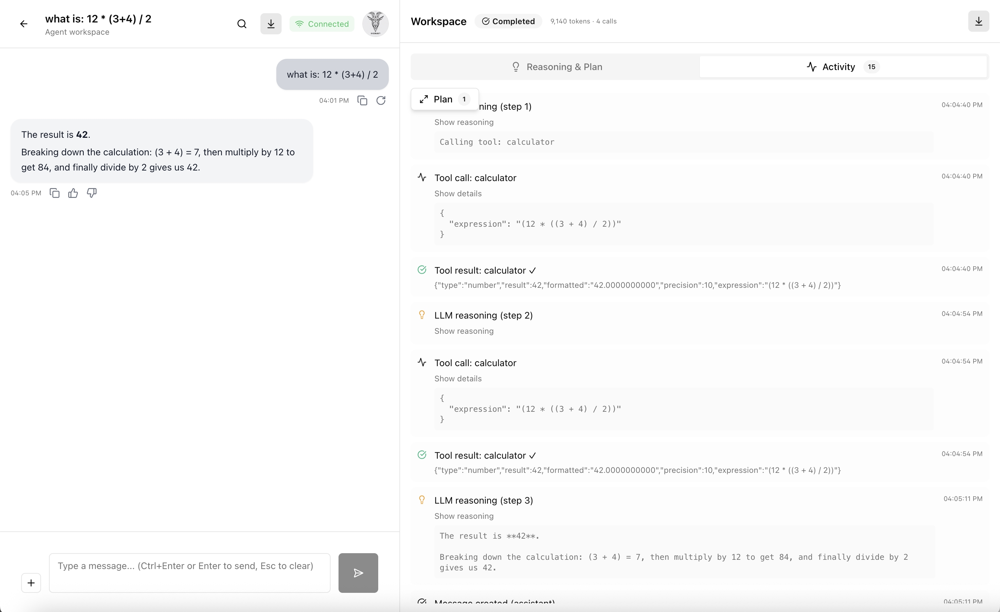
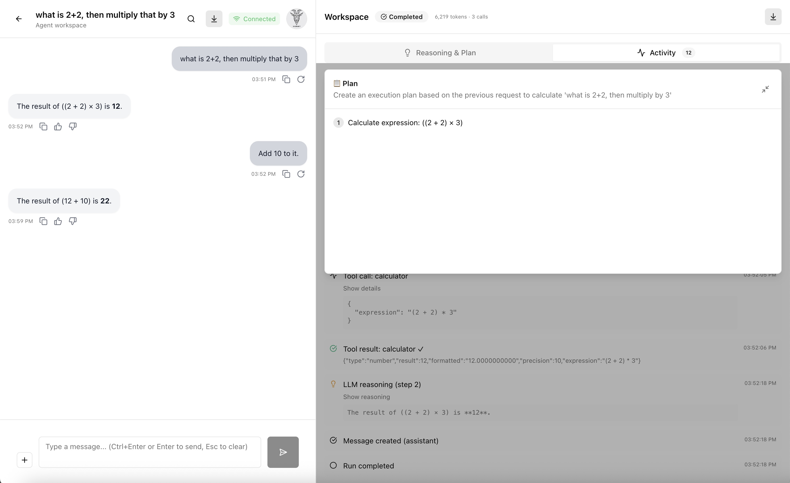

From Chatbot to Agent: Adding a Jetson Orin Nano and Long-Term Memory
That went fast!! With some vacation and a few focused days, along with Claude Code
and Gemini CLI doing most of the heavy lifting, I went from a simple chatbot app to an agent :
an API server orchestrating runs, a React front-end, and a dedicated API server to persist
long-term memories on PostgreSQL with pgvector.
Improvement 1: From Chat to Agent
The first big step was turning “chat” into a planner-executor agent. Instead of sending a user message directly to the LLM, the API now runs a planning phase first: the model reads the message and produces a structured JSON plan. An execution loop then works through each step, calling tools and streaming progress back to the UI over SSE. Here is a real plan from a test run:
{
“goal”: “Calculate 12 * (3+4) / 2”,
“steps”: [
{
“id”: 1,
“description”: “Evaluate the expression using the calculator tool.”,
“tool_intent”: “calculator”
}
]
}That single-step plan triggered 4 LLM calls total — planning, tool invocation, result
interpretation, and response synthesis. Under the hood, the Node.js agent API server uses
BullMQ and Redis to queue and process runs asynchronously, while a separate
memory API server backed by PostgreSQL with pgvector handles long-term memory
storage and retrieval.
Improvement 2: Nvidia Jetson Orin Nano as a Kubernetes Worker Node
The second step was upgrading the hardware and adding a GPU for more compute. I installed an Nvidia
Jetson Orin Nano Super Developer Kit and joined it as a Kubernetes worker node, then pointed Ollama
workloads at it while keeping the others on the Raspberry Pi 5. That let me move from
Qwen3 0.6B to Qwen3.5:2b as my default local model, with the agent API and
UI barely noticing anything except “more headroom” for better answers.
The setup and configuration of the Jetson Orin Nano as a Kubernetes worker node was extremely painful and time-consuming. I "bricked" the Jetson Orin Nano at least 20 times before I got it working. It will be worth its own blog post in the future.
The image below shows the agent assignment and run overview.

The image below shows the agent plan and streaming execution.

What's Next
Next, I want to improve the agent tools to ensure they are more robust and useful. And maybe connect to an API of one of the frontier labs APIs (like Google Gemini, OpenAI, Anthropic, etc.) to test my agent against them. This should allow me to validate my code while removing the constraints of the local, smaller models.
I'm also considering upgrading to two GPU nodes and adding llm-d and vLLM to the mix.
AI Usage Disclosure
This document was created with assistance from AI tools. The content has been reviewed and edited by a human. For more information on the extent and nature of AI usage, please contact the author.